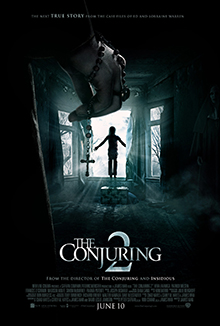
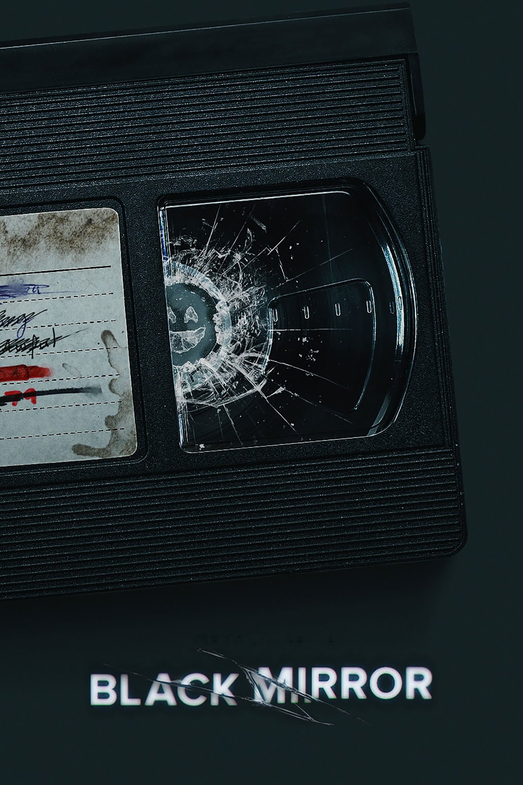
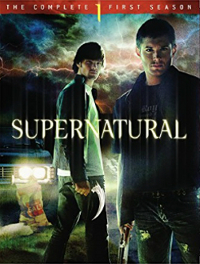

Favorite Horror Series
The Conjuring
The Conjuring 2 (known in the United Kingdom as The Conjuring 2: The Enfield Case)[4][5] is a 2016 American supernatural horror film, directed by James Wan. The screenplay is by Chad Hayes, Carey W. Hayes, Wan, and David Leslie Johnson. It is the sequel to 2013's The Conjuring, the second installment in The Conjuring series, and the third installment in The Conjuring Universe franchise. Patrick Wilson and Vera Farmiga reprise their roles as paranormal investigators and authors Ed and Lorraine Warren from the first film. The film follows the Warrens as they travel to England to assist the Hodgson family, who are experiencing poltergeist activity at their Enfield council house in 1977 which later became referred to as the Enfield poltergeist. In July 2013, before the release of the first film, it was reported that New Line Cinema was already developing a sequel with both Farmiga and Wilson signed on to reprise their roles. By October 2014, it was announced that Wan would return to direct the sequel and would make his first contribution as a writer in the franchise. Principal photography began in September 2015 in Los Angeles and concluded in December 2015 in London.
Chucky

Chucky is an American horror television series created by Don Mancini and based on the Child's Play film franchise. It serves as a sequel to Cult of Chucky, the seventh film in the franchise, and stars Brad Dourif reprising his role as the voice of the titular character, alongside Zackary Arthur, Björgvin Arnarson, Alyvia Alyn Lind, Teo Briones and Devon Sawa.[2] The cast also includes Fiona Dourif, Alex Vincent, Christine Elise, Jennifer Tilly, and Billy Boyd reprising their roles from previous films.[3] Developed for Syfy and USA Network, the series follows Chucky as he commits a series of mysterious murders in a quiet city in the United States. Series creator Mancini and producer David Kirschner both serve as executive producers for the series, alongside Nick Antosca, Alex Hedlund and Jeff Renfroe. The series premiered simultaneously on Syfy and the USA Network on October 12, 2021.[4][5][6] It has received generally positive reviews from critics. In November 2021, the series was renewed for a second season,[7] which premiered on October 5, 2022. In January 2023, the series was renewed for a third season,[8] which premiered on October 4, 2023, and will air in two parts, with the second half coming in 2024
Black Mirror
Black Mirror is a British anthology television series created by Charlie Brooker. Individual episodes explore a diversity of genres, but most are set in near-future dystopias with sci-fi technology—a type of speculative fiction. The series is inspired by The Twilight Zone and uses the themes of technology and media to comment on contemporary social issues. Most episodes are written by Brooker with heavy involvement by the executive producer Annabel Jones. There are 27 episodes across six series and one special, in addition to the interactive film Black Mirror: Bandersnatch (2018). The first two series aired on the British network Channel 4 in 2011 and 2013, as did the 2014 special "White Christmas". The programme then moved to Netflix, where four further series aired in 2016, 2017, 2019, and 2023. A seventh series is in development. Two related webisode series were produced by Netflix, and a companion book to the first four series, Inside Black Mirror, was published in 2018. Soundtracks to many episodes have been released as albums.
First Kill

Teenage vampire Juliette Fairmont, having celebrated her sixteenth birthday, needs to make her first kill in order to enter adulthood and take her place among her powerful family of Legacy vampires, matrilineal direct descendants of Lilith who chose to be bitten by the Serpent in the Garden of Eden. Juliette has difficulty choosing someone to feed on and struggles with her growing blood lust as she believes draining humans is wrong. She instead sets her sights romantically on the new girl Calliope Burns. Calliope, who belongs to a monster-hunting family from The Guardian Guild, needs to slay her first monster in order to gain her family's approval and officially become a Hunter herself. As both families become unavoidably involved, and Juliette and Calliope's relationship develops, the girls realize that killing each other is not so simple.
Supernaturals
The first season of Supernatural, an American dark fantasy television series created by Eric Kripke, premiered on September 13, 2005, and concluded on May 4, 2006, after 22 episodes. It focuses on brothers Sam and Dean Winchester as they track down their father, John, who is on the trail of the demon who killed their mother and Sam's girlfriend. During their travels, they use their father's journal to help them carry on the family business—saving people and hunting supernatural creatures. Jared Padalecki and Jensen Ackles star as Sam and Dean, with Jeffrey Dean Morgan recurring as their father, John, and Nicki Aycox as the demonic Meg Masters. This is the only season to air on The WB, with all subsequent seasons airing on The CW, a joint venture of The WB and UPN.[1] As of 2019, Supernatural is also the only continuing series that originated on The WB, and by far the longest running show ever to have aired on that network with over 300 episodes produced.